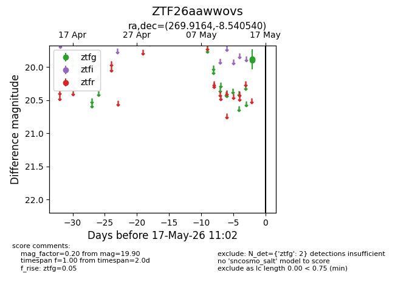
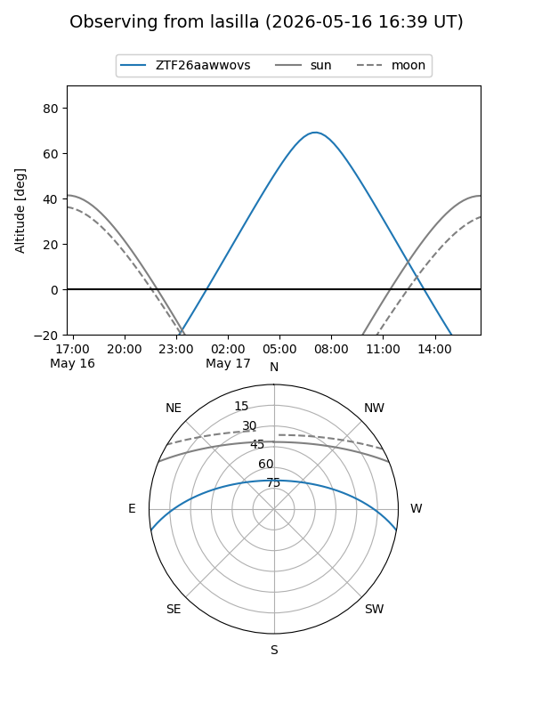
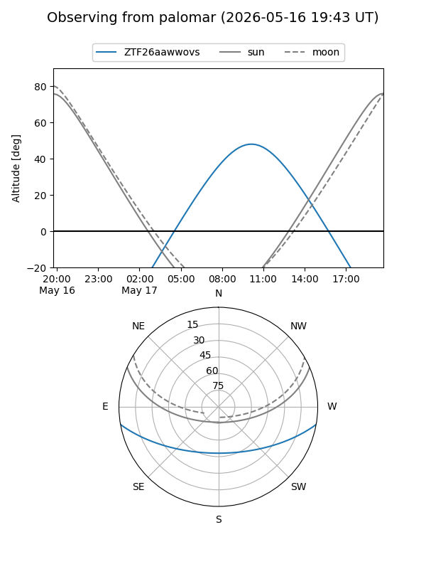

ZTF26aawwovs
Target ZTF26aawwovs at 2026-05-17 11:05
Aliases and brokers:
FINK: link
Lasair: link
ALeRCE: link
alt names
ZTF26aawwovs (ztf,fink_ztf)
Coordinates:
equatorial (ra, dec) = 269.9164,-8.54054
equatorial (HMS+DMS) = 17:59:39.93,-08:32:25.94
galactic (l, b) = (19.3315,+7.43576)
Flags:
Photometry:
last ztfg=19.90
2 ztfg detections
Lightcurve

Visibility


Additional plots